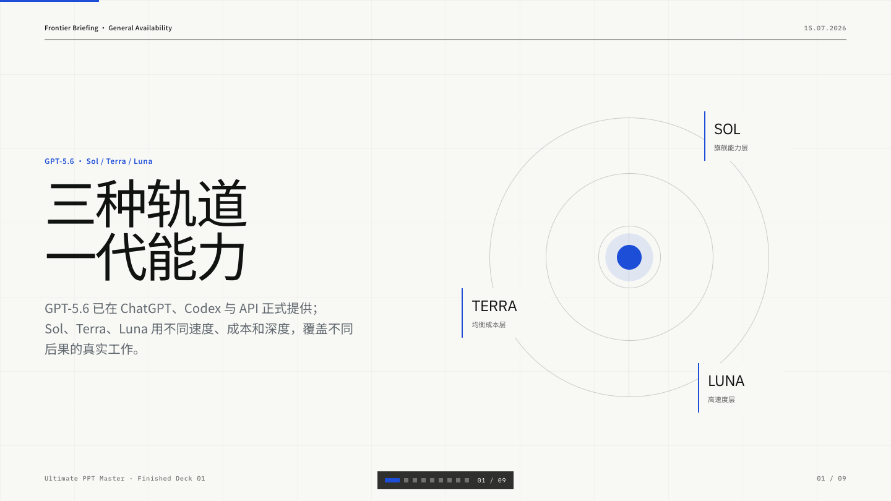

Editable PPTX · 正式办公
Editable PPTX · 正式办公
公开案例 · 先看效果，再看流程
先看成品，
再看交付证据。
一个是可下载、可继续修改的脱敏经营复盘 PPTX；一个是可完整浏览的 GPT-5.6 Web Deck。两条路线都把输入、策划、输出与质量复核放在台面上。
01 / 代表案例
两条路线，两份完整成品。
正式办公优先交付原生可编辑 PPTX；需要浏览器演示与叙事表现时，交付独立 Web Deck。这里先展示各自最能代表当前完成度的一份。
Editable PPTX · 正式办公

AI Web Deck · 浏览器演示02 / 质量证据
不是只给一张好看的截图。
主案例保留可下载成品及其旁证。你可以打开源材料、检查原生对象、查看 PPTLint 规则结果，再读取质量报告中的限制与待复核项。
Proof Pack 分数为内部质量合同，不是第三方 benchmark，也不等同于自动修复成功率。
- 输入
- 使用脱敏或公开 source，明确资料边界。
- 输出
- 提供真实 PPTX 或完整 Web Deck，而非概念图。
- 检查
- 原生对象、PPTLint、渲染与交付状态分别记录。
- 边界
- Design Doctor 默认只报告问题；未经明确授权不自动改写内容。
03 / 次级案例库
更多方向，退到第二层。
这些案例继续保留，用来检查不同叙事和稳定预设；它们不再与两个代表案例争夺首屏注意力。